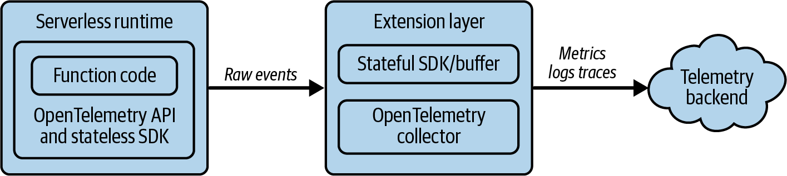

<title>第 7 章　使用 OpenTelemetry 檢測程式碼 — 《可觀測性工程》第二版</title>
<link rel="stylesheet" href="style.css">

<nav class="chapnav">
    <a href="ch06.html">← 上一章</a>
    <a href="index.html">目錄</a>
    <a href="ch08.html">下一章 →</a>
  </nav>
<main>
  <header class="masthead">
    <span class="eyebrow">Observability Engineering · Second Edition</span>
    
    <h1 class="title serif">第 7 章<br>使用 OpenTelemetry 檢測程式碼</h1>
    <div class="rule"></div>
  </header>

  <p>OpenTelemetry 承諾為遙測提供統一標準。但對初學者而言，其複雜度有時會令人感到不知所措。這裡有令人眼花撩亂的術語、範圍廣泛的應用程式介面（API）與 SDK，以及有時被形容為「學習懸崖」而非「學習曲線」的陡峭學習歷程。你應該使用零程式碼檢測還是函式庫檢測？應該發送哪些訊號？切換到 OTel 真的值得花這番功夫嗎？</p>
<p>本章並非帶你深入了解 OTel 所有細節的指南。若想深入了解，我們建議閱讀Ted Young 與 Austin Parker 合著的《Learning OpenTelemetry》（O'Reilly，2024）。在這裡，我們將專注於讓 OTel 變得不那麼令人生畏、更加實用易懂。把本章當作你的一套繩索、安全帶、確保器、頭盔以及情境警覺訓練，幫助你不會從那道學習懸崖上摔下去。</p>
<p>在本章中，我們將介紹一些基本的設計哲學，幫助你理解為什麼、以及如何打造出今日所見的 OTel 專案，以及如何判斷它是否（或不是）適合你的情況。我們也會引導你理解在你可能遇到的複雜架構中，以追蹤為優先的設計原則。接著，我們將深入探討其各種訊號類型背後的權衡取捨，以及如何有效地使用它們。最後，我們也會展示 AI 輔助編碼如何有助於 OTel 檢測，特別是在從其他既有框架遷移時。</p>
<h2 class="section serif">使用 OpenTelemetry 代表什麼意義</h2>
<p>在第 4 章中，我們介紹了城市規劃的比喻，其中檢測扮演著感測器與儀表的角色，提供系統洞察。現在，假設你負責建置這些感測器，並將它們整合進你的分析流水線中。</p>
<p>你可能會發現，某些資料在語意上是相關聯的（例如，計算路口車輛數量的交通感測器，以及交通號誌本身的狀態），但它們卻以不同的格式送達，欄位名稱不同，對單位與意義的認知也不同。你得花時間把訊號轉換成標準化的形式，記錄這些變動，然後每當感測器變動、廠商淘汰某項產品，或是「相容的替代品」發出略有差異的資料時，就得重複這個循環。</p>
<p>如果某個感測器故障，而製造它的公司已經倒閉，或是新版本發出不同的資料，你就得重建整個流水線，才能維持分析的完整性。就算你設法把這一切拼湊起來，最終仍會得到一大堆部分重複的資訊，而讓這些資訊變得連貫且可用的責任，還是落在你身上。</p>
<p>OTel 的存在就是為了減輕這個負擔。它提供了一套開放標準，規範遙測資料要如何建立、傳輸與解讀。它同時也提供了語意慣例（名稱與中繼資料的共通意義），讓你可以在替換元件時不必重建整個流水線。實際上，這意味著更少的廠商鎖定、更少痛苦的遷移過程，以及更乾淨的成本控管，因為你收集的正是你想要收集的東西。以我們的比喻來說，這保證了你不必擔心更換感測器或更新分析工具；即使換了不同的元件，發出的資料還是相同的，運作方式也一樣。</p>
<p>本專案的目標不僅止於提供一種通用格式。其宗旨是讓遙測成為你已經使用的函式庫、框架、執行環境與基礎架構原生具備的功能，而非事後才加上去的附加元件。當統一遙測的豐富交織已然存在，便能開創一個世界：工程師可以輕鬆依需求加入特定業務情境，遙測與可觀測性成為可轉移的技能，而可觀測性則是高品質軟體的預設狀態。</p>
<p>實務上，這代表你的軟體系統能以正確的抽象層級發出正確的訊號，而不需要客製化的設定或轉換。</p>
<p>對你的團隊來說，使用 OTel 意味著什麼？如同所有優秀的軟體問題一樣，答案是「視情況而定」。本章是為正在為應用程式與服務（後端、前端、全端）進行檢測，並希望在模式、邊界與實用技巧方面獲得指引的開發人員與網站可靠性工程師所撰寫。</p>
<h2 class="section serif">使用 OpenTelemetry 進行有效的檢測</h2>
<p>不用寫任何新程式碼，你就能開始使用 OTel。市面上有大量的零程式碼檢測函式庫、代理程式和其他解決方案,能夠針對各種語言中最熱門的函式庫產生指標、日誌和追蹤。困難的部分不在於產生遙測資料,而在於產生「有用」的遙測資料。</p>
<p>有效的檢測有點像雕塑：你要決定保留什麼、捨棄什麼。在本節中,我們會聚焦在邊界、跨度與屬性命名,以及如何選擇正確的遙測訊號來支援你真正需要回答的問題。</p>
<h2 class="section serif">以追蹤為優先的遙測</h2>
<p>OTel 與許多較舊的檢測方式之間最大的差異在於「情境（context）」。「情境」是一個負載過重的術語——它可以指系統內部正在發生事情的狀態、用來在函式與程序之間編碼與傳遞唯一識別碼的資料結構,或是儲存在該結構中的具體數值。</p>
<p>我們將透過檢視 OTel 如何設計檢測,來解開「情境」的神秘面紗。OTel 被描述為「以追蹤為優先」,是因為情境是讓其餘模型能夠運作的黏著劑。如果你在沒有情境的情況下發出傳統的指標和日誌,仍然可以獲得一些價值,但你會錯過主要的好處。在 OTel 中,只要存在有效的情境,所有遙測訊號都可以與特定的請求、交易或工作單元關聯回去。</p>
<p>以追蹤為優先之所以重要,是因為情境傳遞（context propagation）正是這個身分識別在你的系統中移動的方式。情境傳遞有兩種類型：</p>
<dl class="deflist"><dt>程序間傳遞</dt><dd>此身分識別會跨越程序邊界,通常透過使用 W3C TraceContext 的 HTTP 標頭傳遞,其中包含追蹤 ID、父跨度 ID,以及在交易早期設定的選用性隨附資料（baggage,任意的鍵值對）。</dd><dt>程序內傳遞</dt><dd>此身分識別會在程序邊界內部,經由方法、執行緒、協程或元件流動。</dd></dl>
<p>範例 7‑1 展示了這兩種類型的簡化 Java 範例。</p>
<p>範例 7‑1. 程序間與程序內傳遞範例。</p>
<pre class="code"><span class="tok-comment">// Injecting context into outgoing HTTP request</span>
TextMapSetter&lt;HttpRequest.Builder&gt; setter = (carrier, key, value) -&gt;
    carrier.header(key, value);
HttpRequest.Builder requestBuilder = HttpRequest.newBuilder().uri(uri);
W3CTraceContextPropagator.getInstance()
    .inject(Context.current(), requestBuilder, setter);
<span class="tok-comment">// Extracting context from incoming HTTP request</span>
TextMapGetter&lt;HttpServletRequest&gt; getter = <span class="tok-keyword">new</span> TextMapGetter&lt;&gt;() {
    <span class="tok-keyword">public</span> String get(HttpServletRequest req, String key) {
        <span class="tok-keyword">return</span> req.getHeader(key);
    }
    <span class="tok-keyword">public</span> Iterable&lt;String&gt; keys(HttpServletRequest req) {
        <span class="tok-keyword">return</span> Collections.list(req.getHeaderNames());
    }
};
Context extractedCtx = W3CTraceContextPropagator.getInstance()
    .extract(Context.current(), request, getter);
<span class="tok-comment">// Making extracted context current for this thread</span>
<span class="tok-keyword">try</span> (Scope scope = extractedCtx.makeCurrent()) {
    <span class="tok-comment">// All spans created here inherit the parent from extractedCtx</span>
    Span span = tracer.spanBuilder(<span class="tok-string">"child-operation"</span>).startSpan();
    <span class="tok-keyword">try</span> {
        doWork();
    } <span class="tok-keyword">finally</span> {
        span.end();
    }
}</pre>
<p>HTTP 是行程間傳播常見的載體，但並非唯一方式。上下文可以透過多種方式傳遞，包括訊息佇列的信封、環境變數、gRPC 或其他遠端程序呼叫（RPC）框架的標頭等等——任何能可靠附加詮釋資料的地方都可以。</p>
<p>在 Java 這類具備執行緒與強大並行機制的語言中，行程內傳播通常很簡單，只要建立一個範圍（例如用 try 包住一個方法或區塊，方便捕捉失敗），然後在其中建立跨度即可。在該範圍內發出的任何指標或日誌，也會繼承當時作用中的上下文。</p>
<p>值得慶幸的是，像這樣底層的上下文管理，很可能是你不需要親自動手處理的事，尤其是當你使用自動檢測時。</p>
<p>此時，常常會浮現一個念頭：「如果上下文正在流動，那我是不是該為每個函式都建立一個跨度？」在大多數系統中，這其實是錯誤的直覺。</p>
<p>OpenTelemetry 設計中另一個重要部分，是遙測應該分層；也就是說，你應該針對正確的目的使用正確的訊號。舉例來說，跨度應該用來建模有意義的工作單位：對性能與可靠性而言重要的獨立操作。</p>
<p>有兩個問題可以幫助你判斷是否應該建立一個跨度：</p>
<p>1. 它是否「有趣」？這項工作是否對整個請求的性能（例如延遲或失敗）產生有意義的影響？</p>
<p>2. 它是否「可聚合」？如果依名稱及／或屬性對這個跨度進行分組，是否能產生有用的趨勢與比較？</p>
<figure class="plate">
<figcaption><strong>表 7‑1．判斷是否建立跨度的範例指南</strong></figcaption>
<div class="table-wrap">
<table class="datatable">
<thead><tr><th>操作</th><th>有趣嗎？</th><th>可聚合嗎？</th><th>建立跨度？</th></tr></thead>
<tbody>
<tr><td>HTTP 請求處理常式</td><td>是：延遲不固定、可能失敗、跨越邊界</td><td>是：依路由、方法、狀態碼分組</td><td>是</td></tr>
<tr><td>資料庫查詢</td><td>是：受輸入／輸出限制、延遲不固定、容易失敗</td><td>是：依查詢類型、資料表、操作分組</td><td>是</td></tr>
<tr><td>外部 API 呼叫</td><td>是：網路延遲、依賴項失敗</td><td>是：依端點、服務、狀態分組</td><td>是</td></tr>
<tr><td>快取查詢</td><td>是：可區分快慢路徑</td><td>是：依快取名稱、命中／未命中分組</td><td>是</td></tr>
<tr><td>訊息佇列發布／消費</td><td>是：非同步邊界、處理延遲</td><td>是：依佇列、訊息類型分組</td><td>是</td></tr>
<tr><td>私有輔助函式</td><td>否：CPU 使用量微不足道、持續時間可預測</td><td>否：太過細碎，沒有有意義的分組方式</td><td>否</td></tr>
<tr><td>迴圈疊代</td><td>也許：若疊代較慢</td><td>否：每個請求的基數不受限</td><td>否</td></tr>
<tr><td>取值器／設值器</td><td>否：沒有有意義的持續時間或失敗情形</td><td>否：沒有可分組的依據</td><td>否</td></tr>
<tr><td>輸入驗證（純 CPU）</td><td>否：快速、可預測</td><td>也許：可依驗證類型分組</td><td>否</td></tr>
<tr><td>輸入驗證（含輸入／輸出）</td><td>是：架構擷取可能失敗／變慢</td><td>是：依架構、驗證結果分組</td><td>是</td></tr>
<tr><td>業務邏輯協調</td><td>否：只是呼叫其他已檢測的程式碼</td><td>否：持續時間是子跨度的總和</td><td>否</td></tr>
<tr><td>業務邏輯交易或 saga</td><td>是：有意義的狀態變化，可能失敗</td><td>是：依交易類型、結果分組</td><td>是</td></tr>
</tbody>
</table>
</div>
</figure>
<p>建立一個好的追蹤是一門藝術。實務上，過猶不及的情況都相當常見。跨度太多會讓分析變得昂貴且毫無幫助（一個包含數百萬個跨度的追蹤太過詳盡，幾乎無法據以採取行動）。跨度太少則常意味著把數分鐘（甚至數小時）的工作壓縮成單一不透明的處理常式，讓你仍舊只能猜測該如何優化，或找出有效的監控與警報方式。</p>
<p>你也會注意到一種看似與康威定律1相近的模式：追蹤往往會反映出組織界線（例如某群開發人員或他們所管理的微服務）。請抵抗這種傾向。應偏好那些對應真實元件與服務領域界線的跨度——即使這代表跨越團隊界線——因為這才是讓追蹤在事故處理時真正有用的關鍵。</p>
<p>如果你的追蹤裡有一百個兩毫秒的跨度，那你的跨度可能太多了。將它們捲收起來：合併成單一跨度，或將細節以屬性的形式呈現。對於細粒度的性能問題，剖析（見第 20 章）通常是把函式執行合併成有用資料的更好工具。</p>
<h2 class="section serif">自動檢測的風險</h2>
<p>自動檢測經常為了在各種信號類型上追求全面性，而過度傾向產生過多不具行動價值的跨度、指標或日誌。這並非出於惡意，而是通用型函式庫中一種合理的預設行為。你有責任在自己的環境中，讓這些預設值變得合理。</p>
<p>多數情況下，除非真的有需要，否則你應該避免重複產生遙測資料。常見的做法是讓追蹤資料保持取樣狀態。使用者在不同信號之間採用不同的收集規則或取樣策略，是可以預期的。</p>
<p>除了追蹤資料外，針對來自 HTTP 或 gRPC 端點的速率、錯誤與持續時間（RED）指標發出直方圖，能提供準確且高解析度的計數，這非常有用，尤其對高吞吐量服務而言更是如此。直方圖的儲存成本很低，即使你必須依賴頭部取樣來降低整體追蹤吞吐量也是如此。</p>
<p>如果你正被雜訊淹沒，那就把它關掉：捨棄或取樣排除特定的檢測，或以自訂跨度與處理器取而代之，將小型工作彙整成父跨度上的屬性。</p>
<h2 class="section serif">常見架構模式的追蹤</h2>
<p>大多數分散式追蹤模型（尤其是 OTel）都很適合請求／回應架構：客戶端發出請求，服務執行工作，呼叫其相依項目，整個交易可以被視覺化成常見的「瀑布式」追蹤呈現方式。</p>
<p>你的系統架構偏離請求／回應模式越遠，設計追蹤就會變得越具挑戰性。讓我們來看幾種模式。</p>
<p class="fn">1 康威定律描述了組織的溝通結構與其所設計系統之間的關聯。舉例來說，如果一家公司的溝通方式是零散的，那麼其產品與系統也很可能反映出這種零散性。</p>
<h3 class="subsection">追蹤串流架構</h3>
<p>僅次於請求／回應模式，串流處理是最受歡迎且被廣泛使用的系統架構之一，資料在其中流經佇列、匯流排與主題（topic）。它被用於各種場景，從萃取－轉換－載入（ETL）作業（例如財務記錄處理或庫存管理），到事件驅動的業務工作流程，再到社群媒體應用程式的行星級聚合等等。</p>
<p>追蹤資料流處理模型之所以棘手，有兩個原因：</p>
<p>1. 你能檢測的最小「工作單位」，不一定是最值得優化的單位。</p>
<p>2. 你想在這些流水線中警報或衡量的東西，往往與追蹤本身的形狀有關，而不是組成追蹤的那些跨度。</p>
<p>具體來說，開發者通常想衡量流水線的元資料，例如各階段的停留時間（「消費者等待新訊息要多久，這些訊息又有什麼共同點？」），或成功與失敗階段的數量或比例（這對於在佇列之上實作階段函式或有限狀態機的開發者而言很常見）。</p>
<p>有些架構，例如事件溯源（event sourcing），會帶來額外的挑戰。舉例來說，當流水線中的每個邏輯動作都是對一個黃金事件（golden event）的一次或一連串異動時，究竟什麼才算是根跨度，又發生在何時？</p>
<p>OTel 仍然能派上用場，但你通常需要混用多種信號並輔以一點設計。不要試圖只用跨度來回答一切問題。舉例來說，假設你有一個像這樣的工作流程：</p>
<pre class="code">orders-api (produces OrderPlaced)
→ topic: orders.events
  ├ payment-svc (consumes OrderPlaced, produces PaymentAuthorized/Declined)
  ├ inventory-svc (consumes PaymentAuthorized, produces ItemReserved/Backorder)
  ├ shipping-svc (consumes ItemReserved, produces ShipmentCreated)
  └ reconcile-job (nightly batch over events store)</pre>
<p>第一項要求是妥善的上下文傳遞：發布訊息時把上下文序列化進訊息信封（message envelope），消費訊息時再將其取出。對於 Apache Kafka 及類似的佇列或訊息匯流排系統而言，訊息信封讓這件事變得相當直接。</p>
<p>orders‑api 服務會發出一個像 messaging.publish 這樣的追蹤跨度，帶有system、destination topic、message ID，以及相關的業務細節（交易 ID、客戶 ID 等）屬性。該跨度被標記為「生產者（producer）」跨度（相對於「用戶端」），其上下文會被序列化進 OrderPlaced 事件的訊息信封中，然後寫入該主題（topic）。</p>
<p>當消費者讀取這些訊息時，會從信封中提取上下文並建立對應的messaging.process 跨度。這些跨度會透過「跨度連結」（span links）與父項連結2，但不是直接的子項。當消費者將新訊息寫回時，會重複這個過程：為新訊息類型建立一個生產者跨度，依此類推。</p>
<p>一個實用的做法是為每筆交易儲存並雜湊一個唯一識別碼，並在整條流水線中傳播該識別碼。這種傳播方式能直接將所有這些追蹤串連在一起，而不必反向走訪樹狀結構。跨度連結也能協助你將這些跨多個追蹤發生的事件彼此關聯起來。</p>
<p>從概念上來說，這是從建立一個具有單一根節點與多個子節點的追蹤，轉變為一個由不同時間發生的多筆追蹤所組成的時間軸。由於每筆邏輯交易都帶有唯一的關聯 ID，你可以輕鬆將所有相關跨度彙整到一個結果集中，並依需求將其視覺化。</p>
<p>該視角能提供你了解整個流水線的相關樣貌，以及理解每個階段效能的能力，但它有其取捨。雖然這種方式對單一訊息的旅程提供了絕佳的可見性，但要將此方法推廣運用於整個艦隊層級的調查上，可能會有些棘手。</p>
<p>在這種情況下，OpenTelemetry 的指標示例（exemplar）就能派上用場。示例是附加在特定指標點上的一種註記，用來將該指標點與特定的追蹤和跨度關聯起來。雖然你的跨度和追蹤能對每個特定階段或消費者的表現提供深入洞察，但指標能對整個流水線提供頂層洞察——而這也正是你應該把前線警報重點放在的地方。</p>
<p>你的流水線指標比較像是每個階段發出的計數器，顯示成功或失敗（其屬性與跨度資料相仿，但基數較低——因此不見得要在每筆量測上放交易 ID，但應該加上消費者名稱）。針對成功與失敗的作業各發出一個指標，接著透過每個階段、類型、地區等的 failed_total、processed_total 計算並對比率設定警報。這樣一來，你就能透過建立追蹤「從發布到處理」所需時間的直方圖，主動對異常的 Kafka 行為發出警報，並利用範例點（exemplar）將異常資料點連結到特定消費者的追蹤。</p>
<p>如果你使用的是 step function，並且關心每筆交易的階段數量，這也是直方圖的另一個好用例。在終端階段記錄階段數量，也可以選擇使用 baggage 向下傳遞該數量</p>
<p class="fn">2 跨度連結讓開發人員得以呈現複雜的服務相依性與關係圖，甚至能跨越領域或實體邊界。舉例來說，某個公開 API 的用戶端在追蹤其外送請求時，接收端伺服器可以建立一個新的（內部）追蹤，同時保留與第三方原始追蹤之間的連結。這項功能至今尚未被廣泛運用，但具有值得關注的潛在應用。</p>
<p>在消費者觸及的部分。這些量測值有些也可以透過自動檢測取得，或是將既有的基礎架構指標轉換成 OTel 格式（例如 Kafka broker 健康狀態、佇列長度等）。方便的是，只要你將指標記錄在處理程序中活躍的跨度內，這一切大多會自動完成。如果你有正確地在處理程序內傳遞並管理你的 context，這部分工作其實已經幫你做好了。</p>
<h3 class="subsection">非同步工作與作業</h3>
<p>對於 fan‑out/fan‑in 或 scatter‑gather 這類工作模式而言，重點較不在於跨度拓撲，而在於這個請求要如何呈現給用戶（或呼叫者）。假設你有一套影片處理流水線，可接受上傳的內容，然後將其轉譯成一致的格式以供儲存與呈現：</p>
<pre class="code">POST /render → orchestrator
  ├ publish task.transcode
  ├ publish task.thumbnail
  └─ publish task.caption
workers process → orchestrator joins when N succeeds <span class="tok-keyword">or</span> deadlines</pre>
<p>這些情況下的根跨度是那個 POST。你可以選擇使用 parent–child 或producer–consumer 的關係，端視你決定如何監控這個應用程式以及預期的結果而定。無論哪種方式，根跨度都應包含指向每個子處理程序的連結，並有一個最終的彙整跨度，用來統整結果。</p>
<p>警報通常放在進入點（POST）或特定的子任務上，這取決於服務架構或所有權歸屬（Conway's law 確實主宰著一切）。在這種情況下，指標可能不如純粹的跨度來得有用，因為除了網路連結之外，沒有其他你可以優化的共享基礎架構。</p>
<p>接下來，讓我們考慮一個類似但時間跨度長得多的情況，例如夜間作業。假設你有一個夜間工作流程，會彙整來自數千家供應商的庫存報告，而這些供應商的資料格式各有細微差異。擷取與轉換這些資料可能要花上數小時（在某些情況下甚至數天），才能載入商業智慧資料庫中。這項工作的邏輯表示方式可能如下：</p>
<pre class="code">scheduler → [job.run nightly_etl] (ROOT)
              ├ etl.extract
              ├ etl.transform (hours)
              ├ etl.load
              └ report.write</pre>
<p>在這種情境下，你應該避免把轉換步驟變成直接的子跨度這種誘惑。長時間運行的作業會帶來「百萬子跨度追蹤」的風險。反之，如同先前所建議的，應將每個階段建模成各自獨立的追蹤，並用連結與關聯識別碼將這些階段關聯起來。這種做法的一項挑戰在於</p>
<p>父跨度未必會在所有子跨度都完成後才完成。針對這個問題有幾種解決策略，但各有其取捨。</p>
<p>其中一個做法是延續先前提到的分散式 ETL 流程。這種情況下不會有單一的根跨度，而是有一個 producer 追蹤與子追蹤相互連結。缺點是要把所有子追蹤彼此關聯起來可能相當困難。另一種做法是在記憶體中（或檔案裡）逐步建立根跨度，隨著各階段完成加入心跳事件或狀態事件，最後在結束時關閉並寫出。</p>
<p>針對這個問題，「奧坎剃刀」式的解法是隨著子作業進展，週期性地以更新過的時間戳記重新寫出根跨度。但這個做法並不建議採用，因為絕大多數的追蹤資料儲存並不支援更新既有的跨度，多數情況下這類更新不是被拒絕、就是導致未定義行為。</p>
<p>在這類情況下，指標或日誌也能派上用場，提供中間狀態報告，讓你在不破壞跨度與追蹤資料模型的前提下進行監控。只要你在子消費者流程與呼叫之間保留追蹤上下文，就能把指標與其底層的追蹤關聯起來。</p>
<p>在決定要偏向哪一種取捨時，不妨問問自己和團隊：你們真正在意的到底是什麼？再用這個答案來引導思考方向。你是為了滿足需求而勾選核取方塊，還是想要理解並優化這些作業各自的性能？</p>
<p>如果你的主要目標是提供一張安全網，而不是精細的性能優化，可以考慮採用「包含大量屬性的事件」做法：建立單一的彙總跨度（或日誌事件），內含數百甚至數千個屬性，涵蓋大量關於該作業的元資料，並在完成時寫出，其中包含哪些成功、哪些失敗以及原因的豐富元資料。這種做法有助於追蹤隨時間的變化，而不必承擔建立完整、結構良好的離散追蹤所帶來的額外負擔。</p>
<h3 class="subsection">無伺服器</h3>
<p>目前為止的大部分指引都適用於無伺服器環境，但其限制條件會改變各種取捨的權衡方式。在 AWS Lambda 上執行時，也有一些特別的訣竅與考量。</p>
<p>首先，對於無伺服器函式，你可能應該偏好使用自訂檢測，而非仰賴自動檢測。雖然針對無伺服器環境的 OTel 檢測函式庫確實存在，但無伺服器環境的資源限制意味著最好限制在函式中建立的跨度數量。每次呼叫使用單一、設計良好且帶有豐富屬性（捕捉少數幾個關鍵事件細節）的跨度，通常會比一大堆會耗費冷啟動時間與記憶體的龐雜階層結構來得更好。</p>
<p>具體來說，在 AWS 中，有一種有趣（雖然稍微耗費工夫）的策略，就是使用無狀態的 Lambda 追蹤。簡言之，讓函式發出輕量事件，再讓具狀態的OpenTelemetry Collector（搭配自訂處理器）建立一份映射表，將這些事件組裝成一個跨度（見圖 7‑1）。這種做法可以減少函式庫中對狀態的需求，以及無伺服器函式運行環境中對上下文管理的需求，但代價是你需要在Collector 端實作更複雜的邏輯。如果效能是首要考量，這樣的取捨可能值得你採用。理想情況下，未來會有更多無伺服器供應商原生提供達成此目的所需的擴充層。</p>
<figure class="plate">
<figcaption>圖 7‑1。此邏輯圖顯示在無伺服器運行層使用無狀態 SDK，將事件轉發至擴充層中具狀態的 SDK 與 Collector。這項技術可提升可靠性與效能，同時將冷啟動時間降到最低，並能對 Collector 使用一致的設定管理方式。</figcaption></figure>
<p>從實務角度來看，你很可能需要混合使用多種技術，才能以 OTel 完成無伺服器檢測。不同的無伺服器平台會提供不同的掛鉤（hook）與服務特定的擴充功能，用來在執行完畢、進入休眠前產生並發出遙測資料，而這些資料通常不是以原生的 OTel 格式發出。這類資料通常可以透過通用唯一識別碼（UUID）或某種呼叫 ID 進行事後關聯比對。在這種情況下，你需要：使用遙測流水線或轉換機制，將資料路由到與其他遙測資料相同的位置；使用能跨多個資料儲存進行聯合查詢的查詢層；或是將這些事件批次處理、合併、正規化後一起轉發。隨著 OTel 持續成熟並獲得更廣泛的採用，我們希望這些平台未來能為用戶提供原生的 OTel 解決方案。</p>
<h3 class="subsection">擴充版 Berkeley 封包過濾器</h3>
<p>到目前為止，本章都假設你可以修改程式碼以進行檢測。但在某些組織中，實際情況是，這麼做往往需要可觀測性工程師與軟體開發團隊之間的協作，而這種協作若非進度緩慢、不可行，就是根本不可能實現。在這種情況下，擴充版Berkeley 封包過濾器（eBPF）技術就能派上用場。</p>
<p>eBPF 程式是在 Linux 核心（kernel）內部執行3，位於用戶空間（user space）之外，並在與先前所述技術不同的抽象層級上實現可觀測性。eBPF 的獨特之處在於，它的程式被設計成小巧、獨立、低額外負擔且非常安全——它們不會破壞記憶體或造成當機。由於它們在行程之外執行，因此不會產生額外的執行期負擔，而且可以在不需要重新啟動行程或重新編譯的情況下啟用或停用。</p>
<p>OTel 透過 OpenTelemetry eBPF Instrumentation（OBI）套件支援 eBPF檢測。OBI 會從以多種語言撰寫的 HTTP/HTTPS 與 gRPC 服務中蒐集指標與追蹤資料，並允許在服務之間傳遞追蹤情境（trace context）。最好將它理解為一種加速器與補缺工具，可以強化既有的檢測工作，而不是完全取代它們。</p>
<p>舉例來說，OBI 讓你能夠擷取應用程式原本無法取得的核心層級網路操作細節。它讓你能夠透過舊有（legacy）服務傳遞追蹤，否則你會在這些服務上失去可視性。關於其功能、設定與限制的完整討論已超出本書範圍，但我們會談到其他幾項關鍵能力。</p>
<p>除了前面提到對產生遙測資料量的限制外，它還帶有一些維運方面的疑慮。可能會與其他 eBPF 程式產生潛在衝突，你必須小心設定以避免此情況。根據部署方式的不同，它們可能也需要提升的權限。如果你不是以管理者身分（也就是 root）執行 OBI，你就需要為該行程啟用特定權限。</p>
<p>目前，OBI 與其他基於 eBPF 的檢測解決方案已提供了實際價值，而這個領域未來的發展有望釋放出更多潛力。或許我們會看到能從請求中擷取狀態的通道，讓自訂屬性得以加入跨度資料或指標之中。這可能會縮小「觀察執行過程」與「理解意圖」之間的落差。就目前而言，你應該把 OBI 與相關工具視為一種方式：用來為未檢測的系統快速產生追蹤資料（例如，用以填補服務地圖）、延伸追蹤穿越未檢測的服務，或是在除錯核心層級行為時產生檢測。</p>
<p>到目前為止，我們已經介紹了在進行檢測時的各種選項，以及針對超越簡單請求／回應模式的常見架構模式設計追蹤的策略。高品質的追蹤是使用OpenTelemetry 時的基礎，因為它們把其他一切都連結起來。如果你沒有良好的追蹤，你也無法從指標或日誌中獲得許多價值。</p>
<p class="fn">3 微軟目前正在為 Windows 開發 eBPF 層，可以在 GitHub 儲存庫中查看。這將實現一些相當令人興奮的使用案例！</p>
<p>接下來，我們將把視野拉遠，談談分層遙測（layered telemetry），以及如何結合使用追蹤、指標和日誌來達成更好的可觀測性成果。</p>
<p>指標、跨度、日誌、事件——這麼多是怎麼回事？</p>
<p>分層遙測是一種做法，指在你需要的成果所對應的正確細節層級上，使用正確的信號。OTel 讓這件事變得更容易，因為共享的上下文可以將信號關聯回同一個請求。我們將檢視 OpenTelemetry 的設計與語義，讓你在觀測系統時能選擇正確的信號組合。</p>
<p>如先前所述，由於 OTel 具備透過共享分散式上下文層來關聯信號的能力，它是以追蹤為優先（trace‑first）。實務上，以追蹤為優先的關聯性帶來三項好處：</p>
<p>1. 開發者可以層層疊加信號，為同一項工作提供多種「視角」，而不必顧慮下游的取樣或擷取決策。</p>
<p>2. 維運人員可以在可觀測性流水線中，為了維運效率而權衡準確性、可見性與成本。</p>
<p>3. 遙測資料的使用者可以從高層次的症狀深入探究到能解釋生產環境中發生了什麼事的遙測信號，並瞭解其與自身目標的關聯。</p>
<p>OTel 的檢測應採用多信號的方式，但這比單純複製資料更為細緻。挑選信號時，有一個實用的三問測試：</p>
<p>1. 什麼需要因果關係與完整的請求上下文，供使用者參考？（追蹤）</p>
<p>2. 什麼需要低成本的長期儲存，及／或快速的警報？（指標）</p>
<p>3. 什麼是罕見的、什麼是常見的，稽核需求又是什麼？（日誌或事件）</p>
<p>有時你會刻意將兩種信號疊加使用。例如，HTTP 伺服器的常見模式，是為每個處理的請求同時發出一個跨度和一個直方圖指標。這讓使用者在調查時擁有彈性。如果你的 HTTP 服務吞吐量特別高，可以對追蹤做前端取樣（head‑sample）。直方圖能為錯誤和持續時間的異常值提供最後一道警報防線，並可能揭露未取樣跨度中更深層的關聯性。對業務至關重要或敏感的功能——例如計費事件或服務等級協議（SLA）合規性資料——即使該類交易的主要可觀測性信號是以跨度為基礎，仍能從獨立的、僅事件（event‑only）的流水線中受益。</p>
<p>之所以稱這種技巧為「分層」（而非「複製」），是因為你依照使用者的需求提供多種視角。恰當的比喻是使用顯微鏡：你放大得越近，看到的細節就越多。你的</p>
<p>檢測的目的，是在正確的抽象層級提供正確的細節程度，以呈現系統性能的必要視角。</p>
<p>實務上，這代表要從服務邊界的追蹤開始著手。可以把這些追蹤視為連接其他所有訊號的黏著劑。接著，可以在同一個邊界上疊加聚合指標，但維度與屬性要更少。關鍵在於認清這些指標不需要在程式碼中另外檢測。你可以使用OpenTelemetry Collector 或其他可觀測性流水線，直接從跨度資料產生指標（見第 5 章）。</p>
<h3 class="subsection">取樣與跨度指標</h3>
<div class="callout"><p>值得一提的是，如果採用頭部取樣，要從跨度產生準確的指標會很困難（甚至不可能）！OpenTelemetry 專案目前正在開發機率式頭部取樣的支援，讓從頭部取樣資料計算指標能更準確，但這項功能目前仍屬實驗性質。</p></div>
<p>一旦知道要發出什麼，就需要為它命名。名稱應具描述性、無歧義，且容易分組。不要把識別碼或可變的路由組成部分放進名稱中。相反地，識別碼應以描述取代，可變的部分則移到屬性值中。舉例來說，GET/users/profile/349827487124 應改寫成 GET /users/profile/{user.id}。</p>
<p>一般而言，跨度（或日誌）的名稱應遵循點記法，多字詞短語則用蛇形命名法（like_this）連接。可以參考 OpenTelemetry 語意慣例中的許多範例。同樣地，指標在各服務之間也應維持一致的命名。在 OTel 中，應優先使用指標上的中繼資料（例如型別資訊）來表達其含義，而不是把資訊編碼進名稱裡。舉例來說，http.server.request.duration_ms 應改為http.server.request.duration。</p>
<h3 class="subsection">以綱要驅動的遙測</h3>
<div class="callout"><p>一個逐漸興起的做法，是在綱要（schema）檔案中定義遙測慣例，其結構類似於語意慣例，並使用像 OpenTelemetry Weaver 這樣的工具，在編譯期與執行期驗證所發出的遙測資料。Weaver 也能產生程式碼，為實作綱要中定義的訊號建立輔助工具。</p></div>
<p>大多數團隊是在既有系統（brownfield system）中導入 OTel。這代表遷移檢測工作，正好是一個把綱要當作產出物與真理來源（source of truth）的機會，藉此為不同屬性所代表的意涵建立共識。</p>
<p>對現有的遙測資料進行取樣，並將其正規化為新的、具備 OTel 風格、統一格式的資料。為你的組織建立一個命名空間，並用它來收集組織範圍內的概念：服務擁有者、業務單位、成本中心。將這些概念烙印在 schema 中，讓各團隊不再重複發明欄位名稱。將這些 schema 納入版本控制系統，並用它們來協助你的遷移工作，以及輔助你的 AI 協助編碼工作（更深入的探討請見第 16 章）。</p>
<p>一致性與文件記錄並非可有可無。我們曾見過遙測環境中，同一個邏輯值竟有數十個相互衝突的屬性鍵，甚至在單一訊號類型中也是如此。這種重複與混亂在事故發生時，對每個人來說代價都很高：它浪費了寶貴的時間，並大幅拉長調查過程。當引入 AI 之後，情況會變得更糟，因為模型無法可靠地推斷哪個欄位才是標準欄位，並且常常會自信滿滿地使用錯誤的資料建立出不正確的結論。</p>
<p>對你的遙測資料要徹底處理。將單位作為訊號上的屬性納入，避免在同一個鍵中混用不同單位。對可分組的鍵（例如 name 和 route）或系統中其他進入點進行正規化。對用戶資料實踐縱深防禦（DiD）：對可能敏感的值進行雜湊處理，使用 SDK 層與 Collector 層的處理器來過濾，或使用允許清單（allowlist）方式管理屬性鍵與值，並運用轉換處理器來過濾掉常見的個人識別資訊（PII），例如身分證號碼。對於可能敏感的資料（例如用戶識別碼），應優先採用穩定雜湊，並確保你能透過內部 API 將其還原，最好是可以透過腳本執行的方式。</p>
<p>既然我們已經探討過該發出什麼資料、以及該如何塑造它，接下來還有實務上的部分：真正把所有那些檢測程式碼寫出來。過去，這一直是耗時的人力勞動。而如今，只要善加利用，AI 就能協助完成大部分這類繁瑣的苦工。</p>
<h2 class="section serif">使用 AI 代理來檢測你的程式碼</h2>
<p>在開始之前，我們要再次聲明，我們理解在教科書中承諾撰寫 AI 技術所帶來的風險。在撰寫本文之際，有數種 AI 代理正廣泛被使用，例如 Claude Code、Cursor、Gemini CLI，以及其他數十種工具。等到你手上拿到這本紙本書的時候，這些工具很有可能已經因為某種新技術的出現而過時了。</p>
<p>然而，我們相信有一些通用指引，即使在 AI 代理的時代，將 OTel 檢測程式碼寫入應用程式時仍然適用。讓我們來看看它們擅長之處，以及不該處理的部分。</p>
<h2 class="section serif">什麼是代理？</h2>
<p>根據 Anthropic 工程師 Hannah Moran 在 2025 年提出的定義，代理是「在迴圈中使用工具的模型」。讓我們拆解這句話，以了解 AI 代理如何協助我們對程式碼進行檢測。</p>
<p>當我們談到 AI 代理時，廣義上指的是（至少）結合了生成式 LLM（例如OpenAI 的 GPT‑5、Claude Sonnet、Gemini 等）與某個工具子集的軟體框架。在這個情境下，「工具」是指透過模型的 API 公開給模型的程序呼叫。關鍵在於，工具讓模型能夠執行確定性的函式呼叫。</p>
<p>考慮一個獨立運作的 LLM。它會根據訓練資料，預測提示（prompt）的下一個 token。經過調校以作為聊天機器人的模型也會做類似的事，但每一輪（也就是一來一回的請求與回應）都會被加入對話中，模型會根據整個歷史紀錄繼續進行預測。</p>
<p>單靠聊天模型可以回答問題，但無法可靠地檢視整個程式碼庫、在對的時機讀取對的文件、安全地編輯檔案，並驗證結果。檢測（instrumentation）工作需要具備上述所有能力。</p>
<p>簡化來說，代理（agent）只是一個框架，賦予模型這些能力——這和我們身為開發者日常工作所需的能力類似。代理工具可以是任何東西，從 shell 存取權限、專門的網頁搜尋工具（以最適合 LLM 的格式回傳結果），到與軟體即服務（SaaS）資料儲存或可觀測性資料庫的整合都算。</p>
<p>最終結果是，代理程式可以成為添加檢測的有效夥伴，特別是在從現有函式庫或框架遷移到 OTel 的過程中，這類工作雖然重複，卻仍然需要判斷力。</p>
<h2 class="section serif">使用代理程式進行檢測</h2>
<p>從歷史上看，讓開發人員為軟體添加檢測時最大的挑戰之一，是這件事被視為苦差事。而老實說，這確實常常是一個乏味且公式化的過程。</p>
<p>但價值的來源並非鍵入跨度建構器（span builder）呼叫。真正的價值在於我們到目前為止所討論的一切：你所發展出的檢測策略。價值在於你檢測了什麼、如何命名，以及它能幫助你回答哪些問題。</p>
<p>代理程式可以在這個等式的兩個部分都提供協助。在實務上，有兩種工作模式很重要：規劃與執行。</p>
<p>在規劃模式下，你將自己的規格與提示詞交給代理，加入適當的情境（例如引用用戶故事、票單、相關產出物、軟體目標、OTel 文件等），並請代理協助你建立檢測計畫。這個階段還不需要程式碼——只是一份你可以審查的規格，用來確認跨度邊界、名稱與屬性。</p>
<p>規劃模式對於新服務與遷移特別有價值：與其之後在龐大的程式碼庫上進行改造，不如一開始就設計好，再讓代理逐步實作。在這個階段，你要決定如何檢測、要檢測什麼，以及哪些屬性和訊號是關鍵。如果你使用結構描述（schema）工具（例如 Weaver），規劃階段一個很棒的產出物就是一份結構描述規格，以及一組可加入代理記憶中的簡短規則。</p>
<p>在執行模式下，如果你是在棕地（brownfield）環境中工作，就要格外謹慎。你應該給代理一些要遵循的模式，以及如何調整的規則。AI 模型會模仿你儲存庫中最常見的模式，無論這些模式是好是壞。棕地系統很少是一致的。因此，這通常意味著你的代理需要實作小型、具體且針對性的修正，之後再將其歸納為腳本或指示。把改動的範圍控制得夠小，讓程式碼審查真正發揮作用。</p>
<p>一個對代理很有用的模式，是讓它們「自動化這個自動化過程」。與其請代理手動編輯多個檔案，不如讓它先辨識出應該變更的模式，然後撰寫一個腳本以程式化方式進行變更。舉例來說，可以讓代理撰寫一個腳本，利用一些啟發式方法找出所有自訂指標，接著要求它分析每個結果並判斷哪種變更最合理（例如：將該指標轉換為跨度屬性、完全刪除它，或變更其類型）。</p>
<p>如果你還沒有這些機制（大多數團隊都還沒有），可以考慮建立「遙測測試」，在遙測遷移前後擷取診斷輸出。或許可以先用你的代理程式建立這些測試，再用它來比對兩者的語意。這也適用於自動檢測：如果你正從專有的 APM（應用程式性能管理）代理程式遷移到 OTel，可以擷取兩邊的遙測資料，並請你的 AI 代理程式進行差異比對。這正是 AI 擅長處理的重複性比對工作。</p>
<div class="callout"><p>最後：共享規則。把代理程式的指令當作共享工具來對待。將它們納入版本控制、保持簡單，並在團隊間維持一致性。目前興起的一種模式是「代理程式技能」（agent skills）的概念，也就是可以在團隊、個人與組織之間共享的代理程式指令。</p></div>
<p class="fn">把 Agent 規則當作軟體來對待</p>
<p>提示（Prompting）是一種程式設計形式。如果你的團隊仰賴Agent 工作流程，就該對其進行測試。</p>
<p>舉例來說，可以建立一個小型的每日持續整合（CI）作業，利用你的 AI Agent 產生或修改一個適當的產出物（例如函式庫、玩具應用程式等），依你的標準對其進行檢測，執行它使其透過 MCP（Model Context Protocol）整合將遙測資料發送到測試後端，然後獨立評估輸出結果。</p>
<h2 class="section serif">Agent 的實用策略</h2>
<p>AI 模型會依照清晰、簡潔、準確的指示或文件給出良好回應。它們不擅長處理隱含的細微差異、諷刺，或其他形式的模糊語意。它們也很擅長在答錯的時候表現得信心十足。請據此做好規劃。</p>
<p>話雖如此，有些提示工程的民間說法已經過時了。你不需要用獎勵來賄賂模型，或用懲罰來威脅它。4 額外的情緒性語言往往會讓輸出變差，而非變好。真正重要的是管理上下文（或對話歷史），並給出清晰的限制條件。</p>
<p>以下是我們觀察到，在要求 Agent 進行檢測工作，或一般程式設計任務時，行之有效的幾種模式：</p>
<p>管理 Agent 的上下文。</p>
<p>隨著上下文逐漸填滿，Agent 會偏離軌道，而且它們對近期資訊有偏好傾向。可以使用子 Agent（subagent）之類的功能，讓獨立的 Agent 程序在隔離的上下文中執行重複性工作，或者維護一份外部的 markdown 任務檔案，讓 Agent 定期更新，這對於長時程的任務特別有用。</p>
<p class="fn">以小區塊為單位進行工作。</p>
<p>一次專注於單一檔案，甚至是檔案的某個部分，會得到更好、更一致的結果。定期將你的變更提交到版本控管系統，並且不要害怕在 Agent 偏離軌道時捨棄成果並回滾。</p>
<p>不要害怕用完即丟的程式碼。</p>
<p>你可以利用 Agent 打造小型的、專用途的檢測工具，用完就丟。你甚至可以用 Agent 來打造你自己的 Agent！這對遷移工作特別有用，因為你手邊可能有大量可運用的文件。將這些文件整合、彙編，並精煉成系統提示與參考檔案，然後以此為核心來打造你的 Agent。</p>
<p class="fn">4 James Padolsey，〈Tipping AI for Better Responses?〉，2024 年3 月 20 日。</p>
<p>根據特定服務、程式語言或內部框架來調整代理。針對性愈強，就愈有可能在最少監督下獲得良好結果。</p>
<p>讓 AI 協助撰寫文件。</p>
<p>使用代理讀取現有的程式庫或程式碼，讓它以你偏好的任何格式建立初始狀態，作為 schema 檔案。反覆迭代以確保遙測描述的準確性。你甚至可以將現有的可觀測性基本元件（儀表板、警報等）餵給它，讓它了解資料是如何被使用的。有了這個初始狀態後，就能用它來產生規劃好的差異（diff），或建立與現有 OpenTelemetry 概念之間的對映。</p>
<p>把可觀測性帶入軟體開發循環中。</p>
<p>除了遷移之外，將即時可觀測性資料整合進 AI 代理，對開發者來說也相當強大。這能減少開發者的情境切換，並讓你的代理根據真實資料而非猜測來做出更好的選擇。</p>
<p>以一個真實案例來說，本書作者之一在實作一項涉及擷取資料的功能時，需要知道分頁大小（page size）的合理預設值。該代理能夠查詢遙測資料，找出該功能結果集大小的 P50、P99 與 P9999，以及這些資料庫查詢在正式環境中所花的時間。代理不必用猜的，也不必切換情境去手動查找，就能利用真實世界的資料，快速計算出每頁顯示項目數的最佳值。</p>
<p>這些都無法取代工程判斷力。但如果謹慎使用，代理能降低把檢測做好的成本，並讓你在程式碼庫成長時更容易維持遙測的一致性。</p>
<h2 class="section serif">結論</h2>
<p>OpenTelemetry 一開始可能會讓人感到不知所措，但核心概念其實很直接：以共享情境（context）來為系統行為建模、以一致的語義發送信號，並將遙測資料分層，讓維運人員能從高層次的徵狀逐步深入到具體的成因。</p>
<p>在本章中，我們談到了追蹤優先的設計與情境傳播、實務上的跨度邊界劃分、串流與非同步架構的追蹤策略，以及無伺服器（serverless）與基於 eBPF 的檢測所需的特別考量。我們也說明了指標、追蹤、日誌與事件如何相互配合——以及如何為工作選擇正確的信號。</p>
<p>最後，我們討論了在搭配真正的計畫、一致的慣例與可審查的執行方式時，AI代理如何減少撰寫與遷移檢測所帶來的繁瑣工作。儘管 AI 的功能與能力必定會持續演變</p>
<p>接下來，這些準則將說明如何在人類的工程判斷與 AI 新興能力之間取得平衡。</p>
<p>至此，你應該已經具備充分的能力，能從服務中產生可執行的遙測資料。接下來，我們將從「建立」轉向「分析」：如何從你目前所蒐集的所有資料中理出頭緒。</p>
<p>第二部涵蓋了為程式碼加入檢測並產生遙測資料的實務技巧。現在我們來看該如何運用這些資料。</p>
<p>分析是技術基礎的另一半。只做檢測而不做分析，等於是對著虛空記錄日誌。本部將說明如何在開發、部署與正式環境中實際運用遙測資料，我們建議大多數讀者都應閱讀本部內容。</p>
<p>第 8 章介紹核心分析循環：一套可重複執行的工作流程，用來篩選遙測資料、找出模式，並快速找到問題的根源。目標是以資料為主導，而非依靠直覺。本章也會說明如何自動化這個循環的部分環節，包括如何有效運用 AI 助理。</p>
<p>第 9 章探討可觀測性應該如何在日常中形塑開發者的工作流程——在編寫程式碼、部署以及監控執行中系統的過程中。透過說明分析如何讓部署更加可靠，本章也反過來探討檢測應該如何融入開發生命週期。這裡也包含了 AI 助理的相關指引。</p>
<p>第 10 章是由 Coreplane Labs 創辦人暨執行長（CEO）Boris Tane 客座撰寫的章節，內容關於在可觀測性工作流程中使用 AI 代理人。代理人（agentic）領域發展迅速，但仍存在一些持久有效地與這類系統協作的模式。無論你使用的是哪些 AI 工具，這些考量都同樣適用。</p>
<p>第 11 章探討傳統閾值警報的問題，並展示更好的方向：服務水準目標（SLO）。你將學到如何運用第二部分介紹的遙測來定義 SLO，為何包含大量屬性的結構化事件是服務水準指標（SLI）的正確基礎，以及如何建構它們——並在有幫助之處借助 AI 協助。</p>
<p>在第四部分，我們將深入探討內部運作——檢測、遙測收集、儲存與警報——適合想了解幕後運作原理的讀者。</p>

  <footer class="colophon">
    <span>《可觀測性工程》第二版 · 第 7 章</span>
    <span>使用 OpenTelemetry 檢測程式碼</span>
  </footer>
</main>
